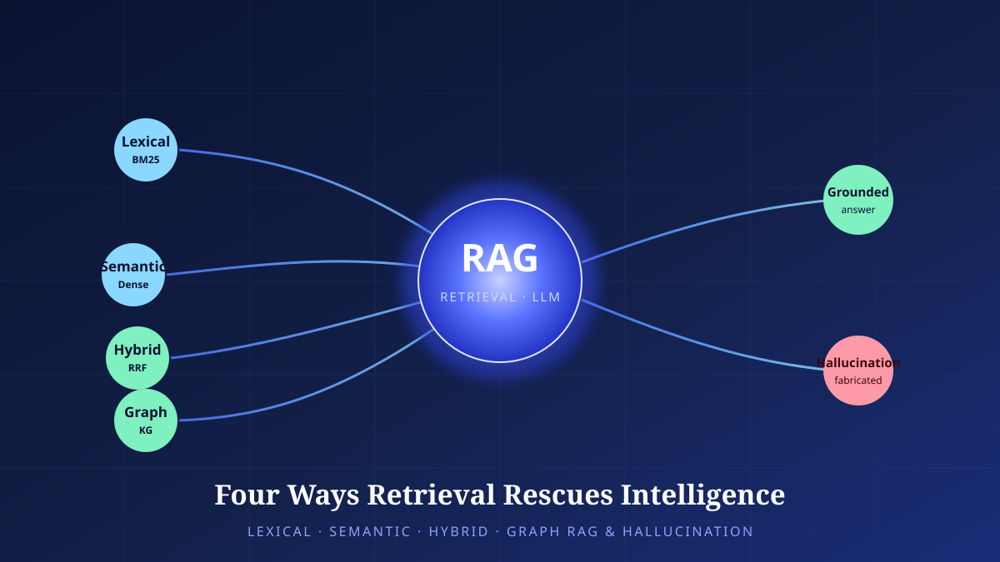

Four Ways Retrieval Rescues Intelligence — Lexical, Semantic, Hybrid, and Graph RAG, and the Anatomy of Hallucination
A large language model's knowledge freezes the moment training ends. Retrieval-augmented generation (RAG) fills that gap by pulling in documents from outside the model. We dissect four retrieval architectures — Lexical, Semantic, Hybrid, and Graph — from first principles, and examine how they reduce hallucination and what still remains.

Frozen Knowledge, Joined to an External Memory
A large language model swallows vast amounts of text and compresses its statistical regularities into billions of weights. This knowledge dissolved inside the model is called parametric knowledge. Remarkably fluent as it is, this knowledge has three structural weaknesses. First, it is static. The world stops at the moment training ends, so the model knows nothing of facts that came afterward. Second, it is opaque. You cannot trace which answer came from which document, so when asked for evidence the model either falls silent or makes something up. Third, that very fabrication — hallucination — trails fluency like a shadow, because the model is trained to generate “something plausible” more readily than to say “I don’t know.”
The idea that takes aim at all three weaknesses at once is Retrieval-Augmented Generation (RAG). In 2020, Lewis and colleagues proposed not to lock knowledge inside the model’s weights alone, but, each time a question arrives, to retrieve relevant fragments from an external document collection, append them to the input, and only then generate the answer. It couples the model’s parametric knowledge with a non-parametric external memory. External documents can be swapped out at any time, so the system is no longer static; sources can be attached to the answer, so it is no longer opaque; and an answer bound to evidence leaves less room for fabrication.
Here, though, the center of gravity quietly shifts. The quality of the answer comes to depend on the quality of the retriever as much as — perhaps more than — on the intelligence of the model. Pull in irrelevant documents and the model is swayed by the noise; miss the document that was actually needed and it still makes things up. In the end, the success or failure of RAG converges not on “how you use the language model” but on “what you retrieve, and how.” That is why this article dissects the four retrieval architectures one by one. The figure below contrasts all four at a glance.
The Power of Matching Words Literally — Inverted Index and BM25
The oldest and most robust form of retrieval is to match words literally. This is called sparse retrieval, or lexical retrieval. Its core data structure is the inverted index. For each term, a list of the documents in which that term appears is built in advance, so that when a query term arrives its list can be pulled up instantly. The canonical function for scoring how relevant those documents are is BM25.
BM25 is a ranking function derived from information retrieval’s probabilistic relevance framework, and it blends three intuitions with precision. The first is term-frequency (TF) saturation. The more often a term appears in a document, the more relevant it is — but not in unbounded proportion. A term that appears ten times is not twice as important as one that appears five times. BM25 tunes this saturation curve with a coefficient k1 (roughly 1.2–2.0). The second is inverse document frequency (IDF). Words common to every document (‘the’, ‘and’) carry no discriminative power, so their weight is lowered, while rarer words are weighted higher. The third is length normalization: a coefficient b (about 0.75) corrects for the fact that a long document would otherwise gain an advantage merely by containing more words.
The strengths of lexical retrieval are clear. When the query term and the document’s word match exactly, it never misses the exact match. It is especially strong with rare terms and unique identifiers — product codes, error messages, people’s names, statute numbers. It is interpretable, showing why a document was chosen — “query term X is right here” — and it is cheap to compute and scales well to large collections. Lucene, Elasticsearch, and the research-standard toolkit Anserini represent this family.
But there is one fatal weakness: vocabulary mismatch. If a user searches for “car” but the document says only “automobile,” it is missed for the sole reason that the words differ. Even when the meaning is identical, a different surface form goes unretrieved. This limitation is what summoned the next architecture.
Chapter 3. Semantic RAGMatching Meaning as Vectors — Embeddings and Approximate Nearest Neighbors
Semantic retrieval, or dense retrieval, matches meaning instead of a word’s surface form. It turns both the query and the documents into high-dimensional real-valued vectors (embeddings), then treats those that lie close in the vector space as relevant. When meanings are similar the vectors move close together even if the wording differs, so the vocabulary-mismatch problem dissolves naturally. “Car” and “automobile” are different words but sit at neighboring coordinates.
The representative architecture of this approach is the bi-encoder. It encodes the query and the document independently, turning each into a single vector. DPR (Dense Passage Retrieval), designed for question answering, kept a separate query encoder and passage encoder and aligned them through contrastive learning; on the Natural Questions benchmark it is reported to have raised top-20 recall (recall@20) by about 20 percentage points over BM25. SBERT (Sentence-BERT), from the sentence-embedding lineage, showed the bi-encoder’s practical advantage dramatically. A task of finding similar pairs by comparing sentence pairs one at a time, which took about 65 hours, dropped to about 5 seconds once the sentences were encoded into vectors in advance. Vectorizing each document only once, ahead of time and storing it in an index is the key that made large-scale semantic search possible.
When documents number in the millions or hundreds of millions, one cannot compare the query vector against every document vector one by one. So we use Approximate Nearest Neighbor (ANN) search. The representative algorithm, HNSW (Hierarchical Navigable Small World), weaves the vectors into a multi-layer proximity graph: it takes a rough bearing in the sparse upper layers and narrows in on neighbors as it descends into the denser lower layers. In place of the linear cost of exact search, its cost is roughly logarithmic — giving up a little accuracy to gain a great deal of speed.
The strengths of dense retrieval are meaning, synonyms, and multilinguality. Even when the wording differs — even when the language differs — it finds what matches in meaning. Its weaknesses are just as distinct. First, it is weak on exact terms and rare entities. Product codes or newly coined words it barely saw in training find no good place in the vector space, so BM25 often wins instead. Second, there is the domain gap: performance drops in specialized domains (medical, legal, internal corporate documents) far from the distribution the embedding model was trained on. Third, there is chunking sensitivity: results swing widely depending on the size at which documents are cut for vectorization. Cut too finely and context is severed; cut too coarsely and several topics blur into a single vector, dulling its focus.
Chapter 4. Hybrid RAGSparse and Dense Together — RRF Fusion and Re-ranking
Set the strengths and weaknesses of Lexical and Semantic side by side and it becomes clear that the two are complementary: where one is weak, the other is strong. So the natural answer in practice is “use both.” This is hybrid retrieval. The problem is only how to combine the two retrievers’ results. BM25 scores and cosine similarities differ in both scale and distribution, so they cannot simply be added.
The most widely used and elegant solution is RRF (Reciprocal Rank Fusion). Its core idea is to discard the scores and use only the ranks. It forms a final score by summing the reciprocals of the ranks each retriever assigned.
RRF’s virtue lies in its simplicity. Because it merely sums the reciprocals of ranks, no score normalization is needed, and the coefficient k acts as a buffer that keeps any single top document from monopolizing the result — empirically, 60 is used as the default. In the original paper, RRF outperformed not only the individual retrieval systems but also other rank-combination methods such as the Condorcet approach. It is an old lesson of information retrieval: a humble formula often surpasses a complex learned combination.
Once fusion has gathered the candidates, the final fine-tuning step is re-ranking. This is where the cross-encoder enters. Unlike the bi-encoder, which encodes query and document separately, the cross-encoder joins query and document into a single input and encodes them together, observing their interaction directly. It is accordingly more accurate, but costly, because the model must be run anew for every document. So it is applied not to the whole retrieval but only to a small number of top candidates. Aiming at the middle ground is ColBERT’s late interaction: it precomputes token-level embeddings and lets them interact only lightly at query time, striking a compromise between the cross-encoder’s accuracy and the bi-encoder’s scalability.
All of these choices rest on the lessons of the BEIR benchmark. On BEIR, which evaluates retrieval tasks across diverse domains in a zero-shot setting, BM25 remained a surprisingly robust baseline across many domains without any training, while dense retrieval alone showed weakness in generalization once it left its training distribution. Re-ranking and late-interaction methods, by contrast, achieved the highest performance on average — at a correspondingly high computational cost. In short, there is no free lunch. Choosing where to stand in the triangle of robustness, performance, and cost is the essence of hybrid design.
Chapter 5. Graph RAGNot Points but a Web — Knowledge-Graph-Based Retrieval
All three preceding methods treat documents as mutually independent fragments. They measure the relevance between the query and each fragment and pull out the top few, but never look at the relationships between the fragments. This works well for local questions where “the answer lies within fragment A,” but is fragile for global sensemaking — questions such as “what themes recur across this entire corpus?” — and for multi-hop questions that must chain evidence across several documents, because the evidence needed is not gathered within any single fragment.
GraphRAG, proposed by Microsoft in 2024, inverts the idea. Before retrieving, it first builds a knowledge graph from the corpus. A language model reads through the documents to extract entities and the relations among them, and groups densely connected clusters of nodes in this graph into communities (hierarchical community detection). The language model then prepares a community summary for each community in advance. Retrieval takes place over these structured summaries rather than over the raw fragments.
Queries divide into two modes. A local query answers by gathering the neighborhood of a specific entity — its connected relations, neighboring entities, and related source text — and suits concrete facts or multi-hop reasoning. A global query surveys the whole corpus through map-reduce: it turns each relevant community summary into a partial answer (map), then synthesizes them into one (reduce). According to Microsoft’s report, on global sensemaking questions over a corpus of about one million tokens, GraphRAG surpassed ordinary vector RAG in the comprehensiveness and diversity of its answers.
The price is construction cost. Building the graph requires sweeping the entire corpus with a language model to extract entities and relations and generating a summary for every community, so the computational, time, and monetary cost of the indexing stage is high. Moreover, because the extraction process itself depends on a language model, there is a risk that extraction errors made here are imprinted on the graph and propagate downstream (error propagation). A single wrongly drawn relation, in other words, can contaminate the evidence for every later query.
The Four Architectures at a Glance
The discussion so far compresses into a single table, below. It is best read not as a ranking of replacements but as a map for choosing.
| Type | Principle | Strengths | Weaknesses | Representative tech | Suited queries |
|---|---|---|---|---|---|
| Lexical (sparse) | Inverted index · word match; BM25 score (TF saturation · IDF · length normalization) | Exact terms · rare words · interpretable · low cost · robust | Vocabulary mismatch (misses synonyms · alternate wordings) | Lucene·Elasticsearch·Anserini | Proper nouns · codes · exact keywords |
| Semantic (dense) | Bi-encoder embeddings + ANN (HNSW) vector proximity | Meaning · synonyms · multilingual | Exact terms · rare entities · domain gap · chunking-sensitive | DPR·SBERT·HNSW | Concept- and intent-centered natural-language queries |
| Hybrid | Sparse+dense fusion (RRF, k=60) + cross-encoder/ColBERT re-ranking | Robust and high-performing through complementarity | Complex pipeline · re-ranking cost | RRF·Cross-encoder·ColBERT | General-purpose · high-precision production search |
| Graph | LLM-extracted knowledge graph → community summaries → local/global | Global sensemaking · multi-hop | Construction cost · extraction-error propagation | Microsoft GraphRAG | Whole-corpus theme discovery · multi-document reasoning |
RAG Reduces Hallucination, but Does Not Eliminate It
Now we enter the heart of this article. Since the biggest reason RAG appeared was hallucination, we must honestly weigh how much it truly resolves. First, let us define hallucination. It splits along two main axes. One is intrinsic hallucination, where the generated content contradicts the given source. The other is extrinsic hallucination, where the model fabricates content whose truth cannot be verified from the source alone. Overlapping but distinct is the pair of factuality and faithfulness. Factuality asks “does it agree with the truth of the world?”; faithfulness asks “is it faithful to the given evidence?” What RAG aims at directly is chiefly faithfulness, because it attaches evidence and tries to tether the answer to that evidence.
So how does RAG reduce hallucination? Because it changes the conditions so that the answer is grounded in the retrieval context before it rather than in parametric memory. Supplying up-to-date facts from outside reduces errors caused by stale knowledge; presenting the evidence documents alongside opens a way to verify the answer through citation. It also gives the model grounds to say “I don’t know” — the signal that the retrieval came back empty.
But here we must be sober. RAG reduces hallucination but does not eliminate it. If anything, retrieval as a new stage introduces new points of failure. The failures frequently observed in practice sort into the following four kinds.
First, retrieval failure. If the needed document is never found in the first place, the model makes things up again on top of empty evidence. Second, noisy context. When irrelevant documents are mixed in, the model is swayed toward them. In particular, the longer the context grows, the more the “lost in the middle” phenomenon appears: when relevant information sits in the middle of the prompt, its utilization drops noticeably compared with when it sits at the front or the back. Third, context neglect. Even with evidence plainly present, the model fails to read it and answers from its own parametric memory. Fourth, knowledge conflict. When the retrieved source and the model’s internal knowledge diverge, error turns on which of the two it chooses to trust.
Techniques for Holding Down Hallucination
The first branch of mitigation is to raise retrieval quality itself. Re-ranking and filtering strip out noise, and placing relevant documents at the edges of the prompt eases lost in the middle. Fundamentally, the hybrid design seen earlier is itself a hallucination-mitigation design, because good evidence is the premise of a good answer.
The second branch is to plant self-checking into the generation stage. Self-RAG trains the model to generate reflection tokens so that it judges for itself whether “retrieval is needed now,” whether “this document is relevant,” and whether “my answer is supported by the evidence.” Instead of retrieving and generating unconditionally, it retrieves only when necessary and critiques its own answer. CRAG (Corrective RAG) places a retrieval evaluator that scores the confidence of the retrieval results, and when that is low it corrects them — through a web search, for instance — or refines the documents before passing them on to generation. Both methods reject the complacency of “we retrieved, so we’re done” and carve a loop that re-interrogates the quality of the evidence into the pipeline.
The third branch is groundedness verification and re-retrieval. It checks whether each generated sentence is actually supported by the evidence documents (a groundedness check), enforces citation, and — if confidence falls below a threshold — does not emit the answer but retrieves again. In short, the key is to turn the linear flow of “search once, answer once” into a cycle with verification and retries.
How Do We Measure It?
As important as mitigation is measurement: what you cannot measure, you cannot fix. RAGAS is a representative framework that evaluates RAG along three axes — faithfulness (is the answer supported by the retrieval context?), answer relevance (does the answer fit the question?), and context precision/relevance (was the retrieved context really what was needed?). The virtue of this approach is that it separates generation from retrieval and can hold each accountable. RAGTruth, meanwhile, is a corpus that annotates hallucinations in large-language-model responses at the word level, providing a precise basis for training and evaluating hallucination-detection models. The “7 Failure Points” taxonomy, which organizes the practical observations mentioned earlier — chunking, retrieval failure, context integration, and so on — becomes a field map for where such evaluation should look.
Chapter 7. ClosingThere Is No Single Right Answer — Designing for Choice and Verification
Having passed through the four architectures, the repeated conclusion is one: there is no universal best. Lexical suits queries where exact keywords, codes, and proper nouns matter; Semantic suits queries that ask about concepts and intent in natural language; Hybrid, fusing and re-ranking the two, suits most production search; and Graph suits queries that survey a whole corpus’s themes or must chain several documents together. Real systems combine these complementarily rather than choosing among them exclusively — hybrid becomes the baseline, with a graph layer laid on top as needed.
The attitude toward hallucination is the same. RAG is not a silver bullet but a device that lowers the probability. Raising the quality of evidence with good retrieval, filtering out bad evidence with self-reflection and retrieval correction, and re-interrogating the answer to the last with groundedness verification and re-retrieval — only with this verification loop is hallucination pressed down to a practical level. And how far it has been pressed must be measured continually with yardsticks like RAGAS and RAGTruth, because improvement without measurement is an illusion.
In the end, the maturity of RAG design moves from the question “which retriever do we use?” to the question “how do we choose the right retrieval for each query, and how do we verify the result?” The four ways retrieval rescues intelligence are four hands that cover one another’s weaknesses, and hallucination is the single shadow those hands must press down together. Designing a system woven from complementarity and verification, rather than searching for one perfect retriever — that is the practical wisdom this field has reached, and where it will remain for some time.
References
- Lewis et al., “Retrieval-Augmented Generation for Knowledge-Intensive NLP Tasks,” NeurIPS 2020. The original RAG paper — coupling parametric and non-parametric knowledge. arxiv.org/abs/2005.11401
- Robertson & Zaragoza, “The Probabilistic Relevance Framework: BM25 and Beyond,” 2009. BM25’s probabilistic relevance framework (TF saturation · IDF · length normalization). dl.acm.org/doi/abs/10.1561/1500000019
- Karpukhin et al., “Dense Passage Retrieval for Open-Domain QA,” EMNLP 2020 (DPR). Improves recall@20 over BM25 on NQ. arxiv.org/abs/2004.04906
- Reimers & Gurevych, “Sentence-BERT,” EMNLP 2019 (SBERT). The large-scale similarity-search advantage of bi-encoder pre-encoding. arxiv.org/abs/1908.10084
- Malkov & Yashunin, “Efficient and robust ANN using HNSW graphs,” 2016/2018. Approximate nearest-neighbor search based on a hierarchical proximity graph. arxiv.org/abs/1603.09320
- Khattab & Zaharia, “ColBERT: Efficient and Effective Passage Search via Contextualized Late Interaction over BERT,” SIGIR 2020. arxiv.org/abs/2004.12832
- Cormack et al., “Reciprocal Rank Fusion outperforms Condorcet and individual Rank Learning Methods,” SIGIR 2009(RRF, k=60). dl.acm.org/doi/10.1145/1571941.1572114
- Thakur et al., “BEIR: A Heterogeneous Benchmark for Zero-shot Evaluation of IR Models,” NeurIPS 2021. BM25’s robustness, the strength of re-ranking, and the generalization weakness of dense-only. arxiv.org/abs/2104.08663
- Edge et al., “From Local to Global: A Graph RAG Approach to Query-Focused Summarization,” Microsoft 2024 (GraphRAG). Community summaries and global sensemaking. arxiv.org/abs/2404.16130
- Ji et al., “Survey of Hallucination in Natural Language Generation,” ACM Computing Surveys 2023. Intrinsic/extrinsic, factuality/faithfulness. dl.acm.org/doi/10.1145/3571730
- Huang et al., “A Survey on Hallucination in Large Language Models,” 2023. A synthesis of the causes, detection, and mitigation of hallucination. arxiv.org/abs/2311.05232
- Liu et al., “Lost in the Middle: How Language Models Use Long Contexts,” 2023. The drop in utilization of information placed in the middle. arxiv.org/abs/2307.03172
- Asai et al., “Self-RAG: Learning to Retrieve, Generate, and Critique through Self-Reflection,” 2023. Self-reflection based on reflection tokens. arxiv.org/abs/2310.11511
- Yan et al., “Corrective Retrieval-Augmented Generation (CRAG),” 2024. Retrieval evaluator plus correction. arxiv.org/abs/2401.15884
- Es et al., “RAGAS: Automated Evaluation of Retrieval Augmented Generation,” 2023. Faithfulness · answer relevance · context relevance. arxiv.org/abs/2309.15217
- Niu et al., “RAGTruth: A Hallucination Corpus for Developing Trustworthy RAG,” 2023/2024. A word-level hallucination-annotated corpus. arxiv.org/abs/2401.00396
- Barnett et al., “Seven Failure Points When Engineering a Retrieval Augmented Generation System,” 2024. Practical failure types such as chunking and retrieval failure. arxiv.org/abs/2401.05856
The concrete figures in the text (e.g., DPR’s roughly 20-point recall@20 gain, SBERT’s 65 hours → about 5 seconds, RRF’s k=60) are quoted as reported in the respective original sources; actual performance may vary with data and settings.
Read next
 Research · Retrospective22
Research · Retrospective22Where, and What Happened: Wiring an Address Knowledge Graph to Multimodal Disaster Perception
The language of a disaster scene arrives as an address. But the judgement is made from video and sensors. Between those two languages sits a gap nobody fills for you. This year I built two pieces of software, one on each side of it — a knowledge graph that resolves addresses into coordinates and relations, and a perception API that reads four modalities on a single backbone. This is a record of trying to make them one stack, and of what is still undone.
 Tech · Issue21
Tech · Issue21Mining, Called Learning: The Generative-AI Copyright and Data-Licensing War
Generative AI was built by swallowing the writing, pictures, and code humanity has piled up over centuries. That swallowing stands behind an old shield called fair use. But in 2025, courts and markets began re-measuring the shield. Lawsuits and a $1.5 billion settlement, licensing deals spreading quietly, "content signals" closing the door on the web, and a technology that asks provenance back — this is a calm map of the war over training data.